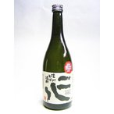

本格焼酎 信州そば 二八（にはち） 限定品 28度 720ml 喜久水酒造 長野県
長野県原産地呼称管理制度の 認定品のそば焼酎です。 この制度は長野県の農産物と 農産物加工品のなかで、 特に味と品質が優れたものを 認定する制度です。 田崎真也氏をはじめソムリエ、 きき酒師、食品業界の エキスパートなどの方々による 厳格な審査を経て 認定された商品です。 原料にこだわり、麹米は飯田産美山錦、 そばは伊那谷の 下条村・飯島町産のものを使用しました。 アルコール分28％、 名水百選「猿庫の泉」の伏流水で醸した、 生産者の顔が見える安心な原料のそば焼酎です。 長野県の原産地呼称制度に認定された逸品です。 二八（にはち）とは 米麹が2割・蕎麦が8割で造られていて、 さらにアルコール度数も28度 というところからきています。 蕎麦の風味を生かしながら、 爽やかな喉ごしを実現した、 黄金比率の蕎麦焼酎です。 原材料 そば（80％）・米麹（20％） 度数 28度